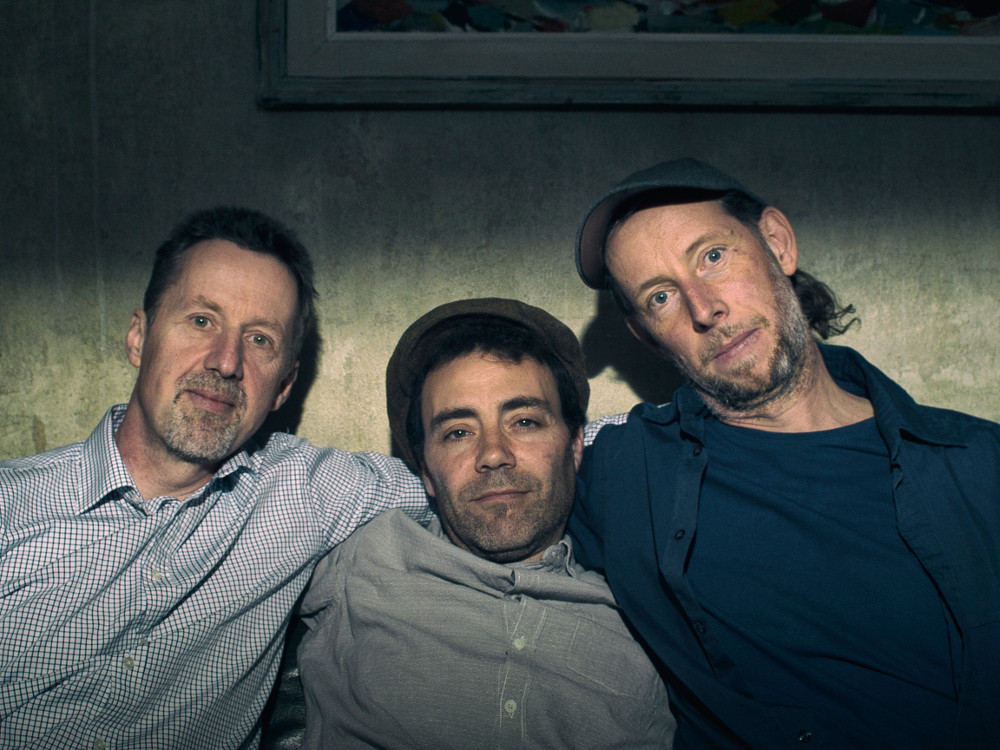

Baccla spielt Weltmusik
Drei Europäer laden zu einer Reise durch die europäische Musik ein. Phil
Alexander aus Edinburgh, Lenz Huber aus Zürich und Stefan Litsche aus Berlin
nehmen ihre Liebe zur Klezmer Musik als Ausgangspunkt, um das Programm mit anderen
Stücken europäischer Folklore und neuen Kompositionen zu erweitern. Das Trio
präsentiert die Stücke mit viel Spielfreude, Liebe zur Tradition und
Improvisation.
Das internationale Trio spielt Stücke aus der
Klezmertradition erfrischend neu, ohne dabei das Rad neu erfinden zu wollen. Die
klanglich sehr flexible Besetzung Klarinette, Akkordeon und Kontrabass lässt aber
auch Spielraum für andere Stile der europäischen Volksmusik aus dem Balkan oder
Skandinavien zu.

Stefan Litsche gehört zum Urgestein der Berliner Klezmer Szene,
Phil Alexander aus Edinburgh kennt sich sowohl in der Klezmer Tradition als auch in
der Englisch-Schottischen Folktradition bestens aus. Der Schweizer Bassist Lenz
Huber hingegen lässt gerne seinen musikalischen Background aus dem Jazz und der Balkanmusik einfließen.
16. November 2017: University of Glasgow
17. November 2017: Edinburgh
Musik hören
Auf Soundcloud haben wir
ein paar Musikbeispiele hinterlegt. Über Kommentare freuen wir uns sehr.